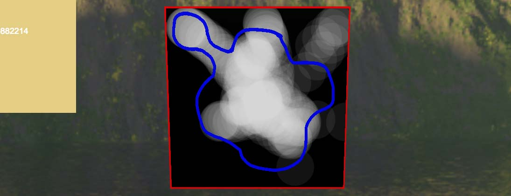
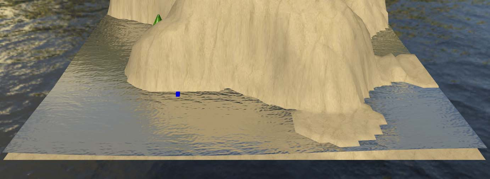
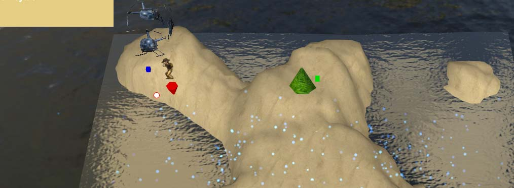

Anleitung
Landscape Challenge
Ziel dieser Anwendung ist die Leap Motion Steuerung im 3D Raum zu testen und die Sprachsteuerung als
Tool zur Spielleitung zu nutzen.
Desweiteren beinhaltet die Anwendung komplexere 3D und Shader Elemente wodurch auch die Performance von
Gesten und Sprachsteuerung in komplexen Szenen getestet wird.
Der Nutzer sieht zunächst eine flache Ebene und schwarze Fläche mit einer eingezeichneten Kontur.
Aufgabe ist es in der schwarzen Fläche, möglichst innerhalb der Kontur per Gestensteurung eine Height
Map einzuzeichnen, aus welcher darauf ein neuer Mesh mit entsprechenden Höheninformationen erstellt
wird. Daraufhin muss der Nutzer 4 Bäume an eine zufällig erscheinende Stelle innerhalb der Landschaft
verschieben. Als nächster Schritt wird Wasser inklusive Shader in die Szene hinzugefügt. Das Wasser soll
durch eine Circle-Geste in einen unruhigen Wellenzustand gebracht werden. Als letzten Schritt aktiviert
der Nutzer eine Spielfigur, welche er daraufhin per Tap-Geste zu einem Rettungshelikopter steuern muss.
Das Wasser steigt dabei an und setzt den Nutzer emotional unter Zeitdruck. Schafft die Spielfigur es
nicht rechtzeitig zum Hubschrauber wird das Spiel als verloren gewertet. Alle Schritte nochmal
zusammengefasst:
1) Sprachkommando „Karte“ startet die Höhenmap Aufgabe. "Fertig" zum Beenden.
> Per Handbewegung wird der Cursor gesteuert. Bei sich schließender Hand wird eine weiße Fläche gemalt
je nach Stärke der geschlossenen Faust.

2) Sprachkommando „Wald“ startet die Platzierungsaufgabe
> Es wird pro Sprachkommando ein Baum erzeugt, welcher an eine der 4 eingezeichneten Punkte verschoben
werden muss. Bei Kontakt wird der Baum fest platziert.
> Alle 4 Bäume müssen platziert werden

3) Sprachkommando „Wasser“ startet die Wasser Aufgabe
> Per Kreis-Bewegung der Hand kann eine der standardisierten Leap Motion
Gesten getriggert werden. Pro erkannte Kreis-Geste werden die Wellen und die Windstärke des Wassers
erhöht. Sobald die zu erreichende Wellenhöhe gesetzt wurde ist die Aufgabe beendet. Per Wisch-Bewegung kann die Windrichtung geändert werden.

4) Sprachkommando „Spiel“ start die Helikopter Aufgabe.
> In der Mitte der Landschaft erscheint eine Spielfigur und eine rotes Dreieck, welches das
anzuvisierende Laufziel der Figur symbolisiert. Aufgabe ist nun eine Finger-Tap-Geste auszuführen, so
als würde man eine Tastaturtaste drücken. Wird diese vom Leap Sensor erkannt, rennt die Figur zu der
anvisierten Stelle. Ziel ist es den Helikopter zu erreichen, bevor das Wasser zu hoch steigt.
